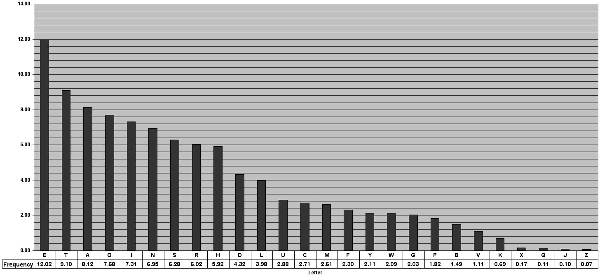

Writer Dvorak layout
The layout focuses on not changing symbol locations when on the same hand.
This cuts down on confusion when switching between Qwerty and Dvorak.
For example []=/-z are in the same locations as Qwerty unlike Dvorak.
As someone who writes text these keys made my life a headache.
It is called Writer Dvorak because it focuses on writing English in Dvorak.
I do some programming with Unix and JavaScript(CSS & HTML) but the English
language was the target. I finally decided that if a key isn't on, below or above
the home row it shouldn't be changed. Programmer Dvorak changes a lot more keys especially
when it comes to the number keys.
Why didn't you put " in the same location?
Because I type on Dvorak frequently enough that my head got to confused
and the location of the ; is close enough to Qwerty with a finger switch.
When I switched to Dvorak on work and other computers I primarily needed the
English language and that is it.
Why was the i moved?
I was moved because it has a higher frequency in the English language.
If you don't like it move it. My head tends to switch back and forth
between regular Dvorak and this modification okay. I(7.31%) is higher then U(2.88%).
Why are there 2 f keys?
Because F keys(2.3%), the symbols and the I(7.31%) keys have lots of controversy. Look at the keys
in Dvorak of letter frequency in the graph below. X has a .17 frequency so it selected based
on similarity of the F key. If you type on F frequently on a laptop and computer
it makes reaching the key that much easier on a laptop with out having to reach for the keys.
X is reached by pressing alt+bottom F. F is roughly 13 times more common as X.
Dvorak was designed originally for a staggered keyboard and not a flat laptop.

1234567890-=
'.,pyfgcrl[]\
aoeiuhtns;
zjqkfbmwv/
Dvorakaltx needs alt+bottom f to produce x.
Prose: e t a o i n h s r d l u m w c y f g , p b . v k ' " - ; ! ? x j q : z _ < > ) ( 1 2 0 4 3 5 9 8 6 7 * [ ] + & / } { % @ $ = ~
Casual: e t a o i n s r h l d c u m g y f p w b . , v k 0 - ' x ) ( 1 j 2 : q " / 5 ! ? z 3 4 6 8 7 9 % [ ] * = + | _ ; \ > $ # ^ & @ < ~ { } `
Programming: e t a r i s n o l c d _ p u f m ( ) g h ; b , = . v x y * " k w - 0 / $ > { } 1 : ' \ 2 q [ ] j & + z < 3 | @ # 4 ! 8 5 6 9 7 % ? ~ ^ `
Formal: e t a i o n s r h l d c u f m p g y w b , v . k - x " ; 1 j q 0 2 ' ) ( z : 9 [ ] 3 4 5 6 8 7 ? ` _ / ! & ^ + % = { * } | ~ > # < @ $
News: e t a i o n s r h l d c u m p f g y w b , . v k " - 0 ' x j 1 z 2 q 9 5 3 8 4 7 : 6 ( ) $ ; | ? / ! & ] [ % @ _ > < * = + #
dvorakaltx.klc
dvorakaltx.ahk

Related Links
- Programmer Dvorak
- http://xahlee.info/kbd/char_frequency_counter.html
- https://en.wikipedia.org/wiki/Keyboard_layout#Non-QWERTY-based_Latin-script_keyboard_layouts
- https://www.slant.co/options/1596/alternatives/~dvorak-simplified-keyboard-alternatives
- http://www.mit.edu/~jcb/Dvorak/
- https://demonstrations.wolfram.com/MappingLetterFrequencyToAKeyboard/
- Click here
Austin Anderson